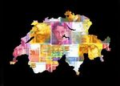

De: La Frikipedia, la enciclopedia extremadamente seria.
De: La Frikipedia, la enciclopedia extremadamente seria. De: La Frikipedia, la enciclopedia extremadamente seria.

|
FRIKIPEDIA QUIERE QUE ESTA DEFINICIÓN
PASE A SER UN ARTÍCULO FRIKIPÉDICO La información contenida en este artículo es una mínima parte de su jugo total, así que ponte los guantes, saca el tupperwere y empieza a exprimir el tema. Si lo haces serás recompensado con una galleta en almíbar y algo más. |
| De la serie Países del planeta tierra: | |||||
| Confederación Blanqueadora de Suiza | |||||
|---|---|---|---|---|---|
| |||||
| Lema: ¡Nosotros lavamos más blanco! | |||||
| Himno: ¡Abuelito dime Tu!
| |||||
| 
| |||||
| Capital | Casita del Abuelo | ||||
| Mayor ciudad | Heidi Stadt | ||||
| Lenguas oficiales | Alemán, Francés, Japones, Inglés, Catalán, Suahili... | ||||
| Gobierno | Democracia Patora Ovejera y Cabrera | ||||
| Pastorcita Dictadora | Heidi | ||||
| Área | Centro de Europa / Los Alpes. | ||||
| Población | indefinida, hay tantos inmigrantes que uno se confunde contando | ||||
| Moneda | La de todo el mundo | ||||
| Zona horaria | GTM +1 (GMT en Canarias) | ||||
| Dominio Internet | .heidi | ||||
| Código telefónico | 0069
| ||||
País en el que no ha nacido ni su padre. La mayoría de sus habitantes a nacido en otros países vecinos como navaja suiza. Este país del centro de europa es el hermano maligno de Francia debido al gañanismo de los premios no-vel. También es las tierras de mordor, escenarios de todas la batallas de la películas de la Segunda guerra mundial y todo tipo de terrenos mierderos por el estilo. Este país no ha tenido que pelear ninguna guerra mundial, ya que sus playas son demasiado emosas para atreverse a atacarlas.
Este país es el principal exportador de navajas del mundo, aunque la mayoría o toda la producción es para McGyver, el cual pasa mas tiempo aquí que en su casa, la mayoría del tiempo comprando nuevas navajas para reparar las que se ha cargado de tanto usar, bueno navajas y chicles. Cuenta la leyenda (mentira, lo cuenta algun desgraciado) que aquí fue creada la bomba nuclear usada en Hiroshima, y que fue creada por McGyver en uno de sus arrebatos mecánicos cuando encontró un clip y al rebuscar en los bolsillos encontró un chicle bubaloo y un chicle boomer de fresa. Cuando acabó de juntarlo todo decidió que era una chapuza y se lo regaló a los estadounidenses. Más tarde se daría cuenta de su error y decidio crear la serie McGyver para demostrar al mundo que él había creado la bomba, junto con otros aparatos por el estilo.
También típico de este país son los relojes, magnífico instrumento que ayuda a los suizos a controlar cuanto tiempo queda hasta que McGyver empiece de nuevo con sus fechorías mecánicas. Para desgracia de estos, McGyver una vez encontró uno de estos relojes y construyó el arma de la nueva era: La Bomba Fotónica, dispositivo que funciona a base de fotones cargados de electricidad estática, veneno y polen, todo ello mezclado con un proyectil de plasma capaz de reventar medio sistema solar.
Suiza cuenta con unas magníficas montañas que por el momento sobreviven a los experimentos de McGyver y de los que merece la pena echar un vistazo antes de que se vayan al infierno por un bombazo de chicle.
Particularmente bellas son sus playas, situadas al nordeste de la capital, que pese a que los suizos se empeñen en decir que es Berna, todos sabemos que es Vic.
  Imperios de Europa Imperios de Europa
|
|---|
| Eslovaquia |
Autor(es):